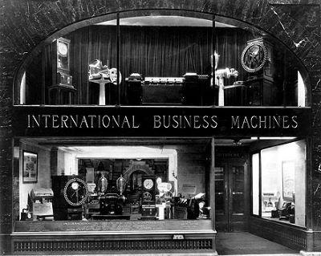
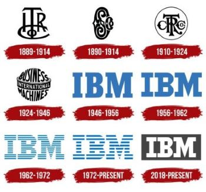

|

|
História IBM
|
A IBM, International Business Machines Corporation, é uma empresa multinacional de tecnologia e consultoria com sede nos Estados Unidos. Fundada em 1911, a IBM é uma das empresas mais antigas e reconhecidas no setor de tecnologia. Inicialmente focada em hardware, como máquinas de tabulação e computadores mainframe, a IBM expandiu suas operações para incluir serviços de software, serviços de nuvem, inteligência artificial, análise de dados e consultoria em tecnologia. Ao longo de sua história, a IBM foi responsável por inovações importantes, como o desenvolvimento do primeiro computador comercialmente viável, o IBM 360, e a criação do sistema operacional OS/360. A empresa também desempenhou um papel fundamental na evolução da computação pessoal, com o lançamento do IBM Personal Computer (PC) em 1981. Atualmente, a IBM é uma líder em tecnologias emergentes, como inteligência artificial, computação em nuvem e blockchain. Além disso, a empresa é conhecida por seu compromisso com a pesquisa e desenvolvimento, mantendo vários laboratórios de pesquisa em todo o mundo. A IBM tem uma ampla gama de clientes, que vão desde empresas de pequeno porte até grandes corporações e governos. Sua missão é fornecer soluções tecnológicas inovadoras que ajudem seus clientes a resolver problemas complexos e impulsionar o progresso em diversos setores da economia global. |
 |
|  |
Após 1985, a IBM passou por várias mudanças significativas e eventos importantes. Aqui estão alguns dos principais acontecimentos da IBM nesse período: Reestruturação e foco em software e serviços (1990s): Na década de 1990, a IBM enfrentou desafios financeiros significativos e passou por uma reestruturação que a levou a se concentrar mais em software e serviços. Isso incluiu a aquisição de empresas de software, como Lotus Development Corporation (criadora do Lotus Notes) e Tivoli Systems (especializada em gerenciamento de sistemas), fortalecendo sua posição nesses mercados. Adoção de Linux e Open Source: Nos anos 2000, a IBM se tornou um grande defensor do Linux e do movimento de software de código aberto. Isso incluiu investimentos significativos em desenvolvimento de software e suporte ao Linux, bem como contribuições para a comunidade de código aberto. Venda da divisão de PCs: Em 2005, a IBM vendeu sua divisão de computadores pessoais para a Lenovo, uma empresa chinesa. Essa venda marcou uma mudança estratégica para a IBM, que decidiu se concentrar em áreas de maior margem, como software e serviços. Crescimento em serviços de consultoria e nuvem: A IBM expandiu sua presença em serviços de consultoria e nuvem, incluindo a aquisição da PricewaterhouseCoopers Consulting em 2002, fortalecendo suas capacidades de consultoria. Além disso, a IBM investiu pesadamente em tecnologias de nuvem, incluindo o lançamento da IBM Cloud em 2007. |
|
Desenvolvimento de Watson e IA: A IBM desenvolveu o Watson, um sistema de inteligência artificial capaz de responder a perguntas em linguagem natural, que ganhou destaque ao vencer humanos no programa de televisão Jeopardy! em 2011. Desde então, a IBM tem continuado a investir em inteligência artificial e tecnologias cognitivas. Aquisições estratégicas: A IBM realizou várias aquisições estratégicas ao longo dos anos para fortalecer suas ofertas e expandir seu alcance em diferentes setores. Isso inclui a compra da Red Hat, uma empresa líder em software de código aberto, em 2019, por um valor de US $ 34 bilhões, marcando uma das maiores aquisições da história da IBM. Transformação digital e foco em soluções em nuvem e IA: Nos últimos anos, a IBM tem se concentrado em ajudar seus clientes a passarem por transformações digitais, oferecendo soluções em nuvem, inteligência artificial, análise de dados e segurança cibernética. A empresa continua a ser uma das principais fornecedoras de tecnologia e consultoria em todo o mundo, atendendo a uma ampla gama de setores e indústrias. |
©Site criado e desenvolvido pelo Grupo 7. Todos os direitos reservados™